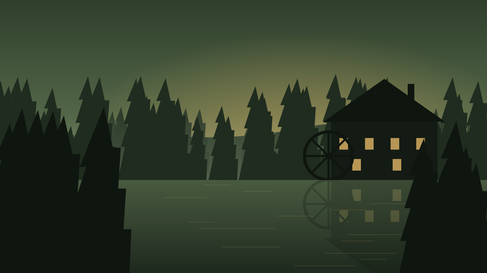
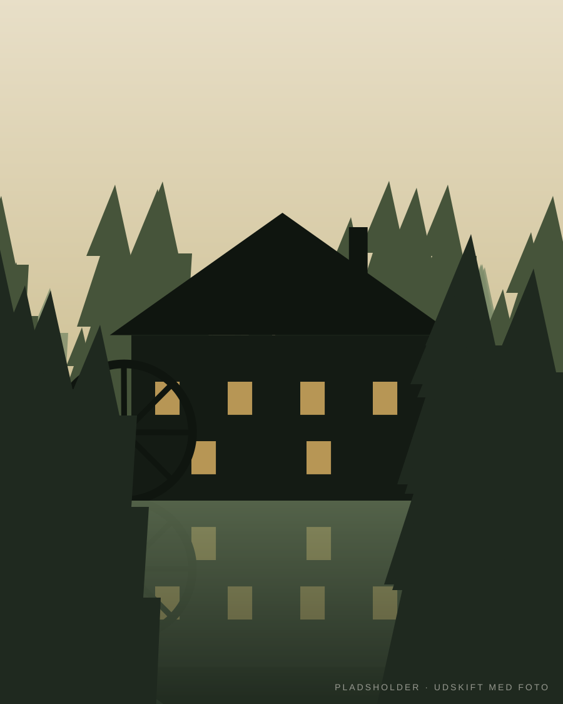
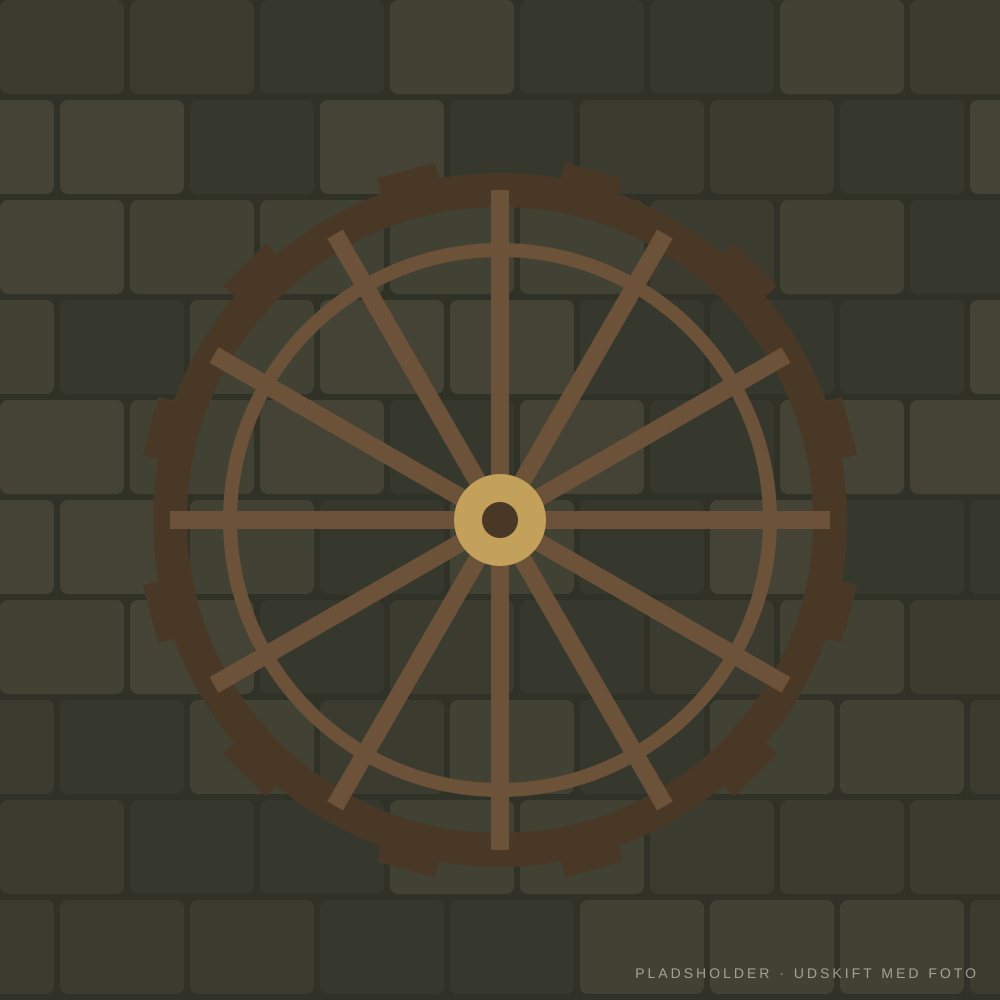
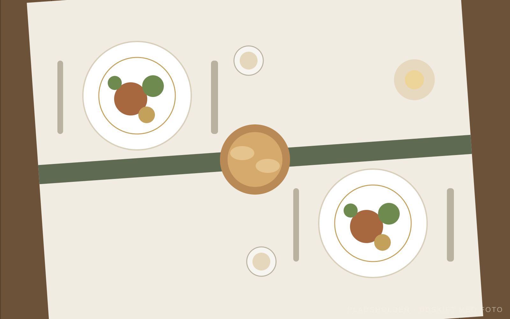
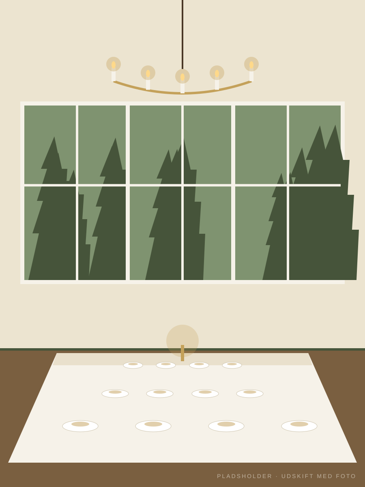
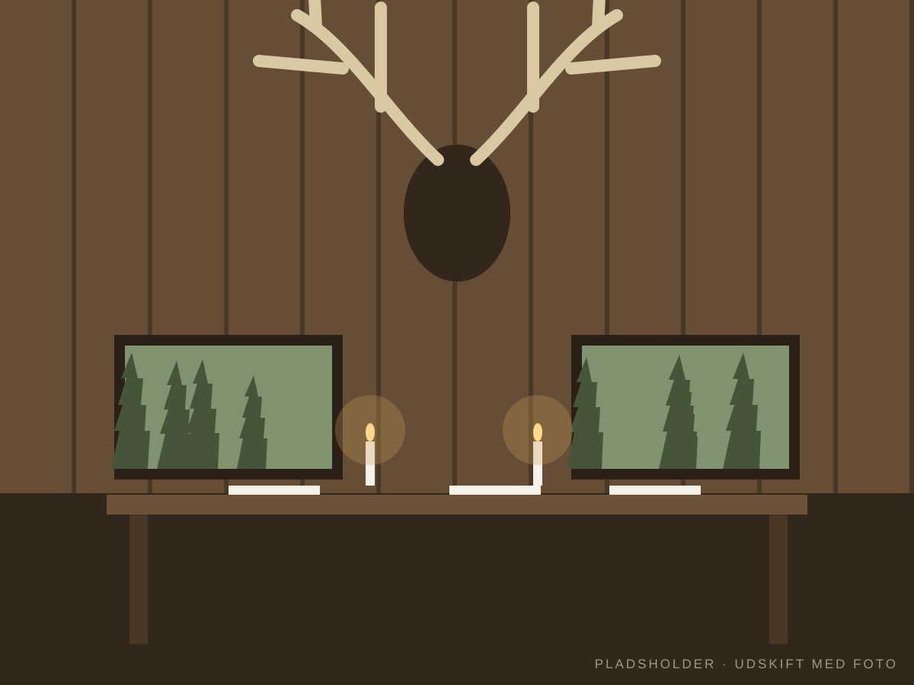
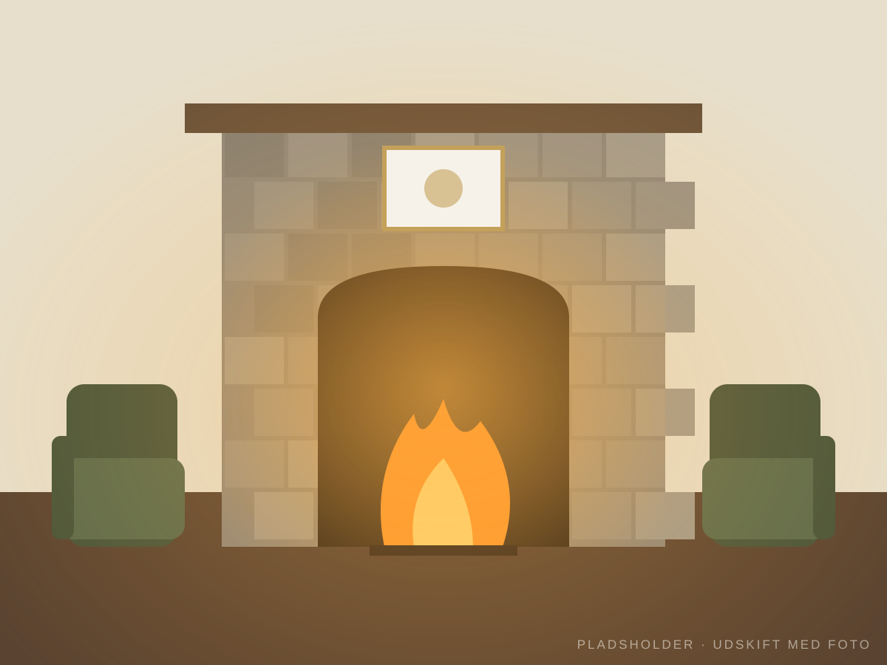
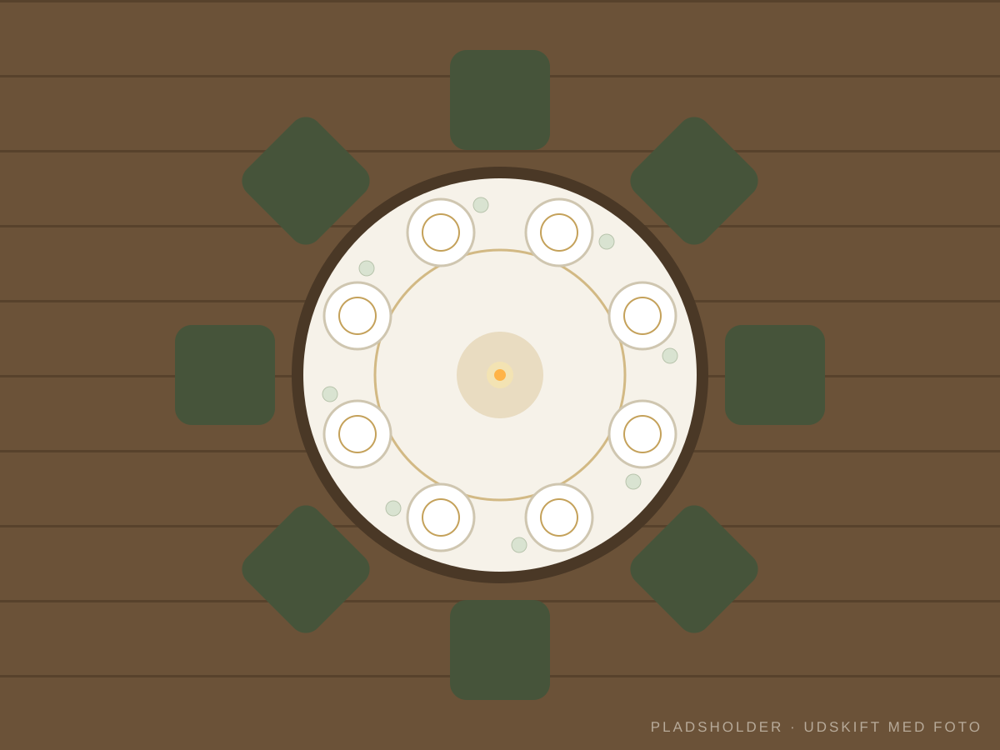
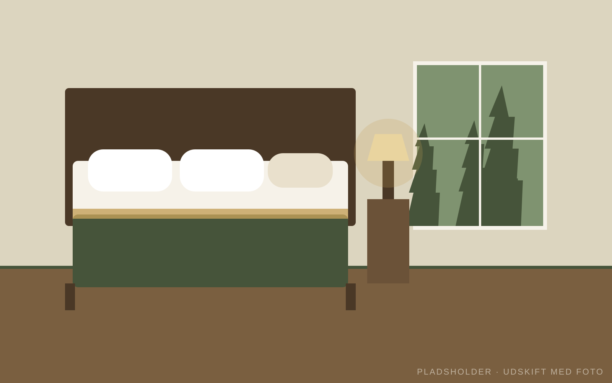

Frijsenborgstuen
Kapacitet: 50 – 100 personer*Velegnet til større selskaber, med god plads til dans & musik. Til bryllupper er terrassen helt perfekt til reception.



Kroen
Midt i skovene omkring Frijsenborg slot finder du Pøt Mølle Slotskro. Omgivet af bakker, et rigt naturliv og historiens vingesus ligger den gamle kornmølle, der sidenhen blev en vandmølle og som i dag er vores restaurant.
På Pøt Mølle slotskro serverer vi gedigen og klassisk mad, der kun bliver bedre af de historiske omgivelser og den gode fortælling.

Menuer
Vi har – ud over vores Á la Carte & Sæsonmenu – særlige aftentilbud hver onsdag, torsdag & fredag.
Serveres med stegte kartofler, ærter francaise & champignonsauce
Alle fredage i Oktober har vi Vildaftener
Søndage kl. 11.30 – 14.00. Stort udvalg af lune & kolde klassiske danske frokostretter. Herefter mulighed for kaffe & kage
Den første torsdag i hver måned fra kl. 17.00 er der Tarteletter & Stegt flæsk Ad libitum. Med kartofler og persillesauce
Vi tager forbehold for eventuelle fejl i tekst og priser.
Selskaber
Vi afholder alle slags Selskaber, Events, Mødefaciliteter m.m

Lokaler
Velegnet til større selskaber, med god plads til dans & musik. Til bryllupper er terrassen helt perfekt til reception.

Velegnet til større selskaber, med god plads til dans & musik.

Velegnet til mellemstore selskaber.

Velegnet til mindre selskaber.
*Alt efter bordopdækning

Værelsesudlejning
Det er inkl. morgenmad. OBS! Vore værelser kan kun lejes 1. februar – 31. august. Vi har kun 4 værelser.
Kroen
Pøt Mølle er en vandmølle, beliggende i kuperet terræn ved Granslev Ådal og omkranset af Frijsenborgskovene nordøst for Hammel.
Kontakt
Ring på tlf. 86 96 51 00 for at bestille bord.
Vi tager forbehold for eventuelle fejl i tekst og priser.
| Mandag | Lukket - åben for selskaber |
|---|---|
| Tirsdag | Lukket - åben for selskaber |
| Onsdag | 11:30 — 21:00 |
| Torsdag | 11:30 — 21:00 |
| Fredag | 11:30 — 21:00 |
| Lørdag | 11:30 — 21:00 |
| Søndag | 11:30 — 17:00 |